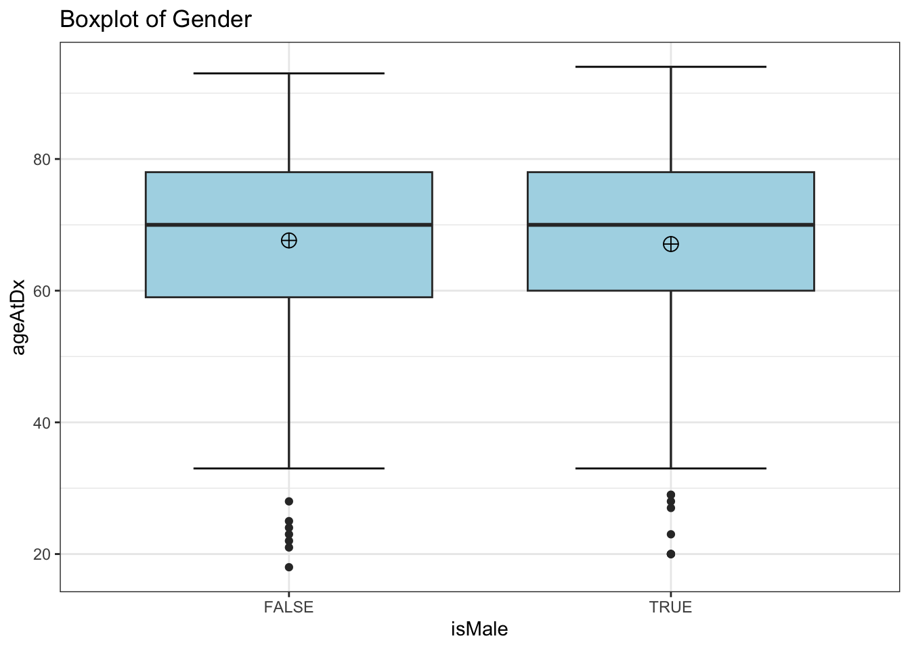
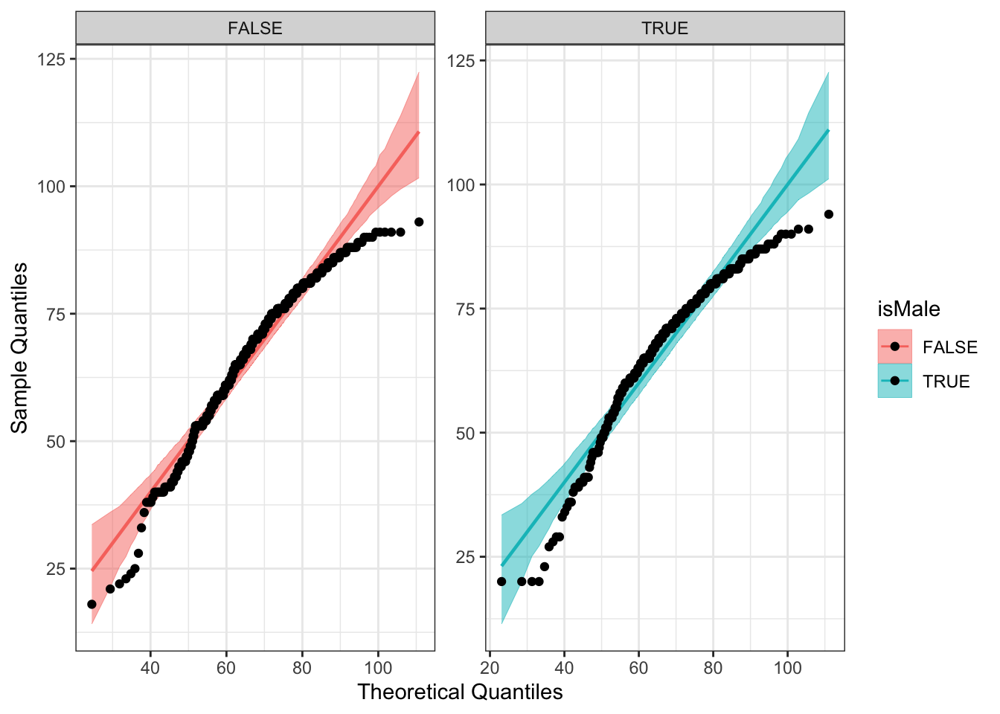
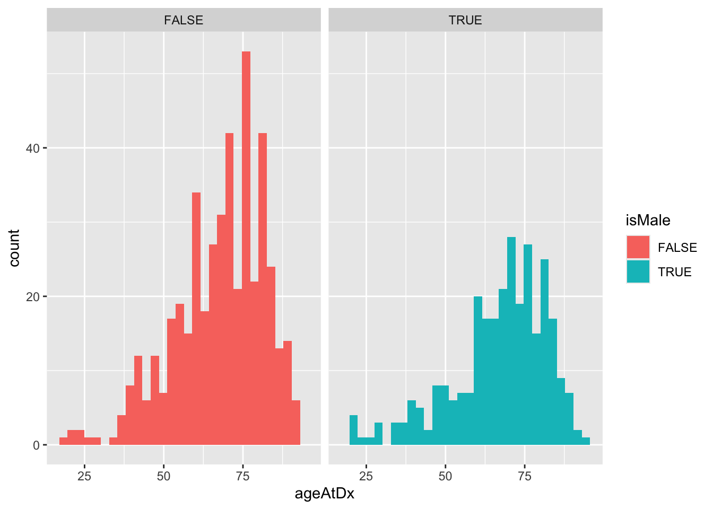
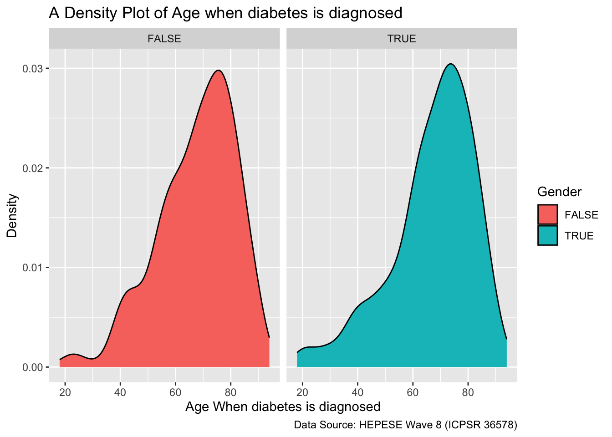

# install.packages("gmodels", dependencies = TRUE)
# install.packages("car", dependencies = TRUE)
# install.packages("DescTools", dependencies = TRUE)
# install.packages("ggplot2", dependencies = TRUE)
# install.packages("qqplotr", dependencies = TRUE)
# install.packages("gtsummary", dependencies = TRUE)12 Mann-Whittney-U Test Example
12.1 Introduction
-
Mann Whitney U test, also known as the Wilcoxon Rank-Sum test, is commonly used to compare the means or medians of two independent groups with the assumption that the at least one group is not normally distributed and when sample size is small.
- The Welch U test should be used when there exists signs of skewness and variance of heterogeneity.fagerland2009?
-
It is useful for numerical/continuous variables.
- For example, if researchers want to compare two different groups’ age or height (continuous variables) in a study with non-normally distributed data.sundjaja2023?
When conducting this test, aside from reporting the p-value, the spread, and the shape of the data should be described.hart2001?
Overall goal: Identify whether the distribution of two groups significantly differs.
12.1.1 Hypotheses
Null Hypothesis (H0): Distribution1 = Distribution2
- Mean/Median Ranks of two levels are equalchiyau2020?
Alternate Hypothesis (H1): Distribution1 ≠ Distribution2
- Mean/Median Ranks of two levels are significantly differentchiyau2020?
12.1.1.1 Mathematical Equation
\(U_1 = n_1n_2 + \frac{n_1 \cdot (n_1 + 1)}{2} - R_1\)
\(U_2 = n_1n_2 + \frac{n_2 \cdot (n_2 + 1)}{2} - R_2\)
Where:
- \(U_1\) and \(U_2\) represent the test statistics for two groups;(Male & Female).
- \(R_1\) and \(R_2\) represent the sum of the ranks of the observations for two groups.
- \(n_1\) and \(n_2\) are the sample sizes for two groups.
12.1.1.2 Basic criteria
Samples are independent: Each dependent variable must be related to only one independent variable.
The response variable is ordinal or continuous.
At least one variable is not normally distributed.
12.2 Performing Mann-Whitney U Test in R
12.2.1 Data
In this example, we will perform the Mann-Whitney U Test using wave 8 (2012-2013) data of a longitudinal epidemiological study titled Hispanic Established Populations For the Epidemiological Study of Elderly (HEPESE).
The HEPESE provides data on risk factors for mortality and morbidity in Mexican Americans in order to contrast how these factors operate differently in non-Hispanic White Americans, African Americans, and other major ethnic groups.The data is publicly available and can be obtained from the University of Michigan website.kyriakoss.markides2016?
Using this data, we want to explore whether there are significant gender differences in age when Type 2 diabetes mellitus (T2DM) is diagnosed. Type 2 diabetes is a chronic disease condition that has affected 37 million people living in the United States. Type 2 diabetes is the eighth leading cause of death and disability in US. Type 2 diabetes generally occurs among adults aged 45 or older although, young adults and children are also diagnosed with it these days. Diabetes and its complications are preventable when following proper lifestyles and timely medications. 1 in 5 of US people don’t know they have diabetes.national2020?
Research has shown that men are more likely to develop type 2 diabetes while women are more likely to experience complications, including heart and kidney disease.meissner2021?
In this report, we want to test whether there are significant differences in age at which diabetes is diagnosed among males and females.
Dependent Response Variable
ageAtDx = Age_Diagnosed = Age at which diabetes is diagnosed.
Independent Variable
isMale = Gender
Research Question:
Does the age at which diabetes is diagnosed significantly differ among Men and Women?
Null Hypothesis (H0): Mean rank of age at which diabetes is diagnosed is equal among men and women.
Alternate Hypothesis (H1): Mean rank of age at which diabetes is diagnosed is not equal among men and women.
12.2.2 Packages
gmodels: It helps to compute and display confidence intervals (CI) for model estimates.warnes2022?
DescTools: It provides tools for basic statistics e.g. to compute Median CI for an efficient data description.andrisignorell2023?
ggplot2: It helps to create Boxplots.
qqplotr: It helps to create QQ plot.
dplyr: It is used to manipulate data and provide summary statistics.
-
haven: It helps to import spss data into r.
Dependencies = TRUE : It indicates that while installing packages, it must also install all dependencies of the specified package.
Loading Library
suppressPackageStartupMessages(library(haven))
suppressPackageStartupMessages(library(ggpubr))
suppressPackageStartupMessages(library(gmodels))
suppressPackageStartupMessages(library(DescTools))
suppressPackageStartupMessages(library(ggplot2))
suppressPackageStartupMessages(library(qqplotr))
suppressPackageStartupMessages(library(gtsummary))
suppressPackageStartupMessages(library(tidyverse))Data Importing
# Mann_W_U <- read_sav("data\\36578-0001-Data.sav")
Mann_W_U <- read_csv("../data/03_HEPESE_synthetic_20240510.csv")Rows: 744 Columns: 2
── Column specification ────────────────────────────────────────────────────────
Delimiter: ","
dbl (1): ageAtDx
lgl (1): isMale
ℹ Use `spec()` to retrieve the full column specification for this data.
ℹ Specify the column types or set `show_col_types = FALSE` to quiet this message.12.2.3 Data Exploration
# str(Mann_W_U)
str(Mann_W_U$isMale) logi [1:744] FALSE FALSE FALSE TRUE FALSE TRUE ...str(Mann_W_U$ageAtDx) num [1:744] 87 70 68 60 55 33 38 65 50 68 ...After inspecting the data, we found that values of our dependent and independent variable values are in character form. We want them to be numerical and categorical, respectively. First, we will convert dependent variable into numerical form and our independent variable into categorical. Next, we will recode the factors as male and female. Also for ease, we will rename our dependent and independent variable.
# convert to number and factor
Mann_W_U$ageAtDx <- as.numeric(Mann_W_U$ageAtDx)
class(Mann_W_U$ageAtDx)[1] "numeric"[1] "factor"The next step is to calculate some of the descriptive data to give us a better idea of the data that we are dealing with. This can be done using the summarise function.
Descriptive Data
Des <-
Mann_W_U %>%
select(isMale, ageAtDx) %>%
group_by(isMale) %>%
summarise(
n = n(),
mean = mean(ageAtDx, na.rm = TRUE),
sd = sd(ageAtDx, na.rm = TRUE),
stderr = sd/sqrt(n),
LCL = mean - qt(1 - (0.05 / 2), n - 1) * stderr,
UCL = mean + qt(1 - (0.05 / 2), n - 1) * stderr,
median = median(ageAtDx, na.rm = TRUE),
min = min(ageAtDx, na.rm = TRUE),
max = max(ageAtDx, na.rm = TRUE),
IQR = IQR(ageAtDx, na.rm = TRUE),
LCLmed = MedianCI(ageAtDx, na.rm = TRUE)[2],
UCLmed = MedianCI(ageAtDx, na.rm = TRUE)[3]
)
Des# A tibble: 2 × 13
isMale n mean sd stderr LCL UCL median min max IQR LCLmed
<fct> <int> <dbl> <dbl> <dbl> <dbl> <dbl> <dbl> <dbl> <dbl> <dbl> <dbl>
1 FALSE 455 67.6 14.1 0.661 66.3 68.9 70 18 93 19 68
2 TRUE 289 67.1 15.1 0.886 65.3 68.8 70 20 94 18 68
# ℹ 1 more variable: UCLmed <dbl>n: The number of observations for each gender.
mean: The mean age when diabetes is diagnosed for each gender.
sd: The standard deviation of each gender.
stderr: The standard error of each gender level. That is the standard deviation / sqrt (n).
LCL, UCL: The upper and lower confidence intervals of the mean. This values indicates the range at which we can be 95% certain that the true mean falls between the lower and upper values specified for each gender group assuming a normal distribution.
median: The median value for each gender.
min, max: The minimum and maximum value for each gender.
IQR: The interquartile range of each gender. That is the 75th percentile – 25th percentile.
LCLmed, UCLmed: The 95% confidence interval for the median.
Visual exploration of data
The next step is to visualize the data. This can be done using different functions under the ggplot package.
1) Box plot
ggplot(
Mann_W_U,
aes(
x = isMale,
y = ageAtDx,
fill = isMale
)
) +
stat_boxplot(
geom = "errorbar",
width = 0.5
) +
geom_boxplot(
fill = "light blue"
) +
stat_summary(
fun.y = mean,
geom = "point",
shape = 10,
size = 3.5,
color = "black"
) +
ggtitle(
"Boxplot of Gender"
) +
theme_bw() +
theme(
legend.position = "none"
)Warning: The `fun.y` argument of `stat_summary()` is deprecated as of ggplot2 3.3.0.
ℹ Please use the `fun` argument instead.
2) QQ plot
library(conflicted)
conflict_prefer("stat_qq_line", "qqplotr", quiet = TRUE)
# Perform QQ plots by group
QQ_Plot <-
ggplot(
data = Mann_W_U,
aes(
sample = ageAtDx,
color = isMale,
fill = isMale
)
) +
stat_qq_band(
alpha = 0.5,
conf = 0.95,
qtype = 1,
bandType = "boot"
) +
stat_qq_line(
identity = TRUE
) +
stat_qq_point(
col = "black"
) +
facet_wrap(
~ isMale, scales = "free"
) +
labs(
x = "Theoretical Quantiles",
y = "Sample Quantiles"
) + theme_bw()
QQ_Plot
stat_qq_line: Draws a reference line based on the data quantiles.
-
Stat_qq_band: Draws confidence bands based on three methods; “pointwise”/“boot”,“Ks” and “ts”.
"pointwise"constructs simultaneous confidence bands based on the normal distribution;"boot"creates pointwise confidence bands based on a parametric boostrap;"ks"constructs simultaneous confidence bands based on an inversion of the Kolmogorov-Smirnov test;"ts"constructs tail-sensitive confidence bandsaldor-noiman2013?
-
Stat_qq_Point: It is a modified version of ggplot: : stat_qq with some parameters adjustments and a new option to detrend the points.
3) Histogram
A histogram is the most commonly used graph to show frequency distributions.
Hist <- ggplot( Mann_W_U, aes( x = ageAtDx, fill = isMale ) ) + geom_histogram() + facet_wrap(~ isMale) Hist`stat_bin()` using `bins = 30`. Pick better value with `binwidth`.
3b) Density curve in Histogram
A density curve gives us a good idea of the “shape” of a distribution, including whether or not a distribution has one or more “peaks” of frequently occurring values and whether or not the distribution is skewed to the left or the right.zach2020?
ggplot(
Mann_W_U,
aes(
x = ageAtDx,
fill = isMale
)
) +
geom_density() +
labs(
x = "Age When diabetes is diagnosed",
y = "Density",
fill = "Gender",
title = "A Density Plot of Age when diabetes is diagnosed",
caption = "Data Source: HEPESE Wave 8 (ICPSR 36578)"
) +
facet_wrap(~isMale)
The density curve provided us idea that our data do not have bell shaped distribution and it is slightly skewed towards left.
4) Statistical test for normality
Mann_W_U %>%
group_by(
isMale
) %>%
summarise(
`W Stat` = shapiro.test(ageAtDx)$statistic,
p.value = shapiro.test(ageAtDx)$p.value,
options(scipen = 999)
)# A tibble: 2 × 4
isMale `W Stat` p.value `options(scipen = 999)`
<fct> <dbl> <dbl> <named list>
1 FALSE 0.959 6.50e-10 <dbl [1]>
2 TRUE 0.937 9.99e-10 <dbl [1]> Interpretation
From the above table, we see that the value of the Shapiro-Wilk Test is 0.0006 and 0.000002 which are both less than 0.05, therefore we have enough evidence to reject the null hypothesis and confirm that the data significantly deviate from a normal distribution.
12.2.4 Mann Whitney U Test
result <- wilcox.test(
ageAtDx ~ isMale,
data = Mann_W_U,
na.rm = TRUE,
# paired = FALSE,
exact = FALSE,
conf.int = TRUE
)
test_statistics <- result$statistic
p_values <- result$p.value
method_used <- result$method
result_df <-
data.frame(
Test_Statistic = test_statistics,
P_Value = p_values,
Method = method_used
)
tbl <-
tbl_df(
data = result_df
) Warning: `tbl_df()` was deprecated in dplyr 1.0.0.
ℹ Please use `tibble::as_tibble()` instead.tbl# A tibble: 1 × 3
Test_Statistic P_Value Method
<dbl> <dbl> <chr>
1 66178 0.880 Wilcoxon rank sum test with continuity correction12.3 Results
The mean age at which diabetes is diagnosed is not significantly different in males (69 years old) and females (66 years old). The Mann-Whitney U-Test showed that this difference is not statistically significant at 0.05 level of significance because statistical p value (p=.155) is greater than critical value (p=0.05). The test statistic is W = 5040.
12.4 Conclusion
From the above result, we can conclude that gender does not play a significant role in the age at which one is diagnosed with diabetes. Diabetes is the 8th leading cause of death and disability in the US, and 1 in 5 US adults are currently unaware of their diabetes condition. This urges the need for increased policy efforts towards timely diabetes testing and diagnosing. Although previous research has suggested that there are gender based differences in diabetes related severity of inquiries,kautzky-willer2016? Our findings suggest that this difference is not due to age and can be due to other gender based differences such as willingness to seek medical care, underlying health issues etc. We found that there is no need for gender-based approaches to interventions aimed at increasing diabetes surveillance, and efforts should focus on targeting the population as a whole.